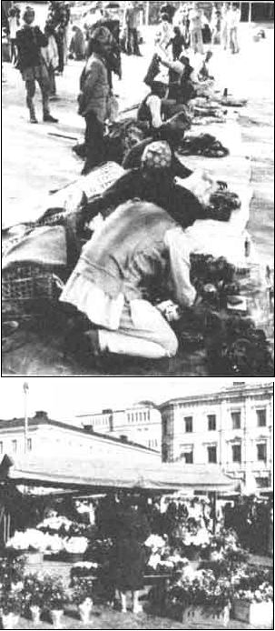

Ecoscience
By Anne and Paul Ehrlich
March/April 1984
THOUGHTS ON THE DESIGN OF A SANE WORLD: PART II
Paul Ehrlich (Bing Professor of Population Studies and Professor of Biological Sciences, Stanford University) and Anne Ehrlich (Senior Research Associate, Department of Biological Sciences, Stanford) are familiar names to ecologists and environmentalists everywhere. But while most folks are aware of the Ehrlich's popular writing in the areas of ecology and overpopulation (most of us - for instance - have read Paul's book The Population Bomb), few people have any idea of how deeply the Ehrlichs are involved in ecological research (the type that tends to be published only in technical journals and college texts). That's why we're pleased to present this regular semi-technical column by these well-known authors/ecologists/educators.
Let's continue the consideration of the characteristics of a sane world that we began in our last column:
A sane world must be equitable. Although complete equality probably cannot be realized, the disparity that exists today between rich and poor - both between nations and within nations - i s too unfair to endure. While the gap separating the haves and the have-nots is growing, the capacity of the have-nots to do something to close it is expanding even more rapidly. Such nations not only possess the majority of Earth's remaining nonrenewable and biological resources, but also have an increasing ability to obtain sophisticated - and even nuclear - weapons. Enormous differences in access to resources, material goods, and political power constantly tend to destabilize the situation . . . as do overt and covert racism and sexism. Gross inequity is a burden humanity can no longer afford to carry. A relatively equitable world would be a much stabler, and therefore much saner, one.
A sane world will be environmentally oriented. This would mean a dramatic revision of today's prevailing attitudes in regard to political and economic issues. For any given population size, socio-political organization, and set of technologies, there's a set of environmental (including resource) constraints that a society must respect if it's not to harm itself and/or future generations. Evaluating the constraints is not simple now, nor will it be in a sane society. But in that society, the focus will be on continual assessment of such constraints and on making decisions that are conservative with respect to those choices we're unsure of. No more, for example, will politicians be able to talk about economic growth taking precedence over environmental concerns . . . as if Congress could repeal the laws of nature if it saw fit to do so.
A sane world will have a sustainable economy. A corollary of such environmental consciousness will be an end to the idea that the material economy can grow continuously. As we said in our last column, the product of {opulation size} X {per capita affluence} X {environmental impact of the technologies required to supply a per capita unit of affluence} must be kept within limits set by the environment.
Especially in rich nations, economic growth can occur in some sectors with a reduction of the consumption of materials. By reducing the environmental impact of technologies, the amount of resources used can be decreased without lowering population size or affluence. The development of the computer industry clearly illustrates how this can be done.
It would, however, be naive to assume that technological advances will allow perpetual growth of the per capita affluence of the population . . . as measured by an aggregate indicator such as gross national product (in constant dollars). All human activities have physical consequences, and the laws of nature put limits on how efficiently such actions can be carried out.
It's highly unlikely that, even with great technological cleverness, a century of even 3% growth in GNP could be accompanied by a reduction in materials consumption. Economic growth in the long run will inevitably result in environmental deterioration, reduction of carrying capacity, and collapse of the human population. In short, the economy must look forward to maturity and refinement, but not to continuous growth. The "growthmanic" economic system is like a dinosaur that's had its hindbrain destroyed: It's dead, but it doesn't know it yet.
A sane world will value and promote diversity of all kinds. Diversity is important to humanity from many points of view. For one thing, genetic diversity in populations is essential to their ability to adjust evolutionarily to an ever-changing world. And human populations are no exception to this rule, although the workings of cultural and biological evolution make the situation complicated. The many different forms of life on this planet are important to human beings not only because of the enormous direct economic and aesthetic benefits we receive from them, but also because they are essential to the running of ecosystems . . . Earth's life-support systems. People in a sane world will never forget that those ecosystems supply services that make life and civilization possible.
Similarly, a sane world will also value cultural diversity . . . in part because of its importance in cultural evolution and in part for aesthetic reasons. Above all, a sane world will be one in which people realize that no one culture has all the answers . . . and that the answers for one generation will not necessarily do the job for the next.
Finally, people in a sane world will benefit from greater diversity in economic systems, energy systems, transport systems, and so on. This diversity will provide stability and security because not all of society's eggs will be in one basket.
Thinking about what a sane world might be like is relatively easy. Finding ways to get from here to there is immensely more difficult. Let's consider briefly why and how it might be possible.
We must eliminate war. Improbable as this goal may seem, it certainly isn't impossible. Rather sizable portions of the globe apparently have already abjured war as a method of settling international disputes. The nations of North America and western Europe no longer have fortified boundaries, even though both regions have seen major conflicts in the past two centuries. Furthermore, over the last 30 years the dangers that would attend any military confrontation between East and West have become increasingly apparent to concerned people on both sides of the Iron Curtain.
The first step, of course, is to eliminate the possibility of thermonuclear war. In spite of saber-rattling on both sides, Soviet and American behavior has been largely characterized by restraint and by the recognition, at least by the civilian leadership, that thermonuclear wars have no victors. The backsliding that is occurring in this area in the Reagan Administration (which seems to take a radical rather than a conservative stance on this issue, as it does on the environment) is a frightening but - it's to be hoped - temporary phenomenon. However, changing Soviet leadership from members of a generation that knew the horrors of the Second World War to those of one that did not may well present considerable dangers, so - on both sides - there's no guarantee that restraint will be continued.
Besides supporting the nuclear arms freeze movement, Americans can improve their chances of' survival and encourage a transition to a sane world by insisting that their government take a first tiny step toward disarmament by immediately dismantling the United States's remaining virtually useless and extremely dangerous (to ourselves) Titan intercontinental ballistic missiles. Removing these obsolete weapons from the American arsenal and dismantling the W53 nine megaton warheads publicly, while challenging the Soviets to match us and raise us, might start a process of reciprocal disarmament.
Once the process was under way, each side would have to make moves that would actually reduce its military power (this would not be the case in getting rid of the all but useless Titans that are being phased out anyway). Since there are enormous risks inherent in the arms race, it's only reasonable to accept some risks in the direction of disarmament. Highly sophisticated systems for reducing the risks of cheating in bilateral disarmament programs have already been designed, and more can certainly be done in that area.
Perhaps the most important thing that Americans can do toward starting the disarmament process is to vote Ronald Reagan out of office this November . . . and to oppose any other politician, Republican or Democrat, who has supported the President's defense or environmental policies. Nuclear war is, after all, just a fast way of reaching the same sort of collapse of civilization that will result from humanity's slower assaults on its life-support systems. Reagan may be a very nice fellow, but his bellicosity and the anti-environmental policies carried out by his underlings make him a grave threat . . . not just to the future of the United States but to the survival of civilization itself.
Some of these ideas were initially presented in a speech to the first biennial "Conference on the Fate of the Earth" in New York City in October, 1982.
The Ehrlichs' work is supported in part by a grant from the Koret Foundation of San Francisco.
 Today's world contains a vast range of cultures, from the swarming street markets of Nepal...to the fancy flower shops in Denmark. We need to keep diversity while reducing inequity. |
 |
|